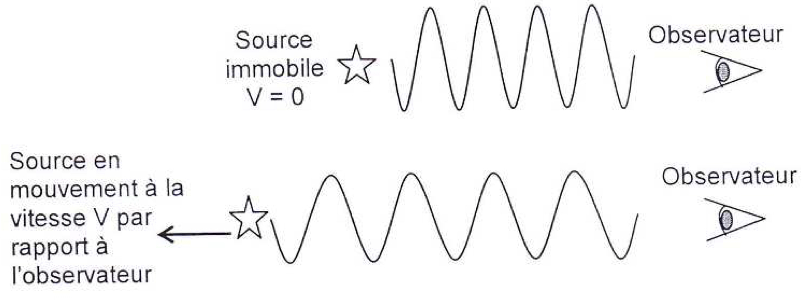
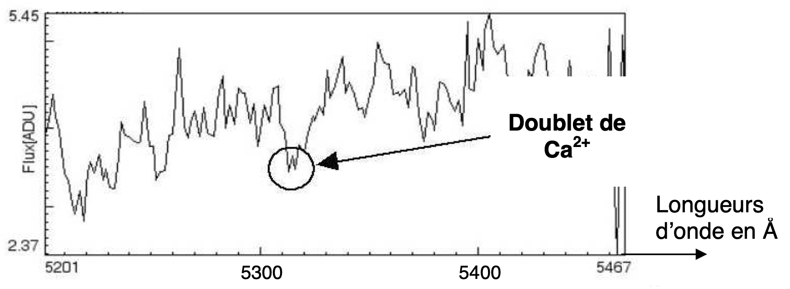
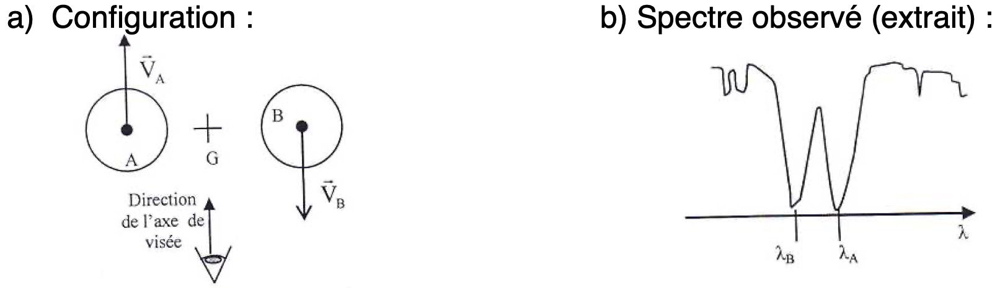
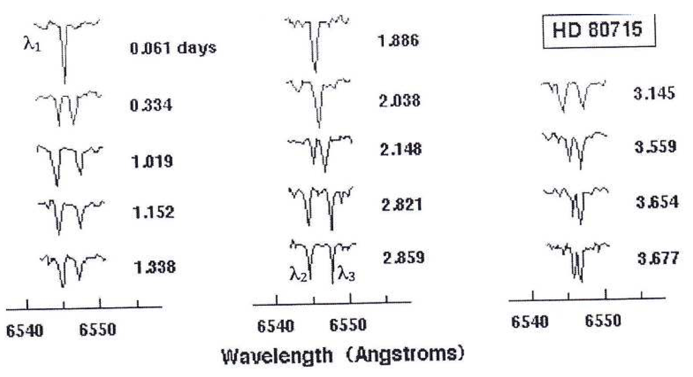

L’effet Doppler constitue un moyen d’investigation utilisé en astrophysique Il permet de déterminer la vitesse des astres à partir de l’analyse spectrale de la lumière que ceux-ci émettent.
Cet exercice s’intéresse à deux applications distinctes, à savoir le modèle d’Univers en expansion et la détection d’une étoile double « spectroscopique ».
Les documents utiles à la résolution sont rassemblés en fin d’exercice.
Donnée
- $\pu{1 \text{\AA}} = \pu{0,1 nm}$.
Preuve de l’expansion de l’Univers
- En utilisant le document 3, déterminer la longueur d’onde médiane du doublet de $\ce{Ca^{2+}}$ dans le spectre de la galaxie nommée : NGC 691.
Sachant que la longueur d’onde médiane $\lambda_0$ de ce doublet mesurée sur Terre pour une source au repos est de $\pu{5268 \text{\AA}}$, calculer le « redshift » $z$ caractérisant le décalage vers le rouge de cette galaxie, défini dans le document 1.
Réponse
- $\lambda_{\text{moy}} = \pu{5315 \text{\AA}}$.
- $ z = \dfrac{\pu{5315 \text{\AA}} - \pu{5268 \text{\AA}}}{ \pu{5268 \text{\AA}} } = \pu{8,922e-3} $. Le décalage en longueur d’onde du à l’éloignement de la galaxie représente environ 0,1 % de la longueur d’onde initiale.
- Calculer la vitesse d’éloignement de la galaxie NGC691 par rapport à la Terre.
Réponse
- $V = c z$ donc $V = \pu{2,99792e8 m.s-1} \times \pu{8,922e-3} = \pu{2,675e6 m.s-1} = \pu{2675 km.s-1}$.
- À l’aide des documents 1 et 2, établir dans le cas non relativiste, la relation entre la vitesse d’éloignement $V$ de la galaxie et sa distance $d$ à la Terre, montrant que $V$ est proportionnelle à $d$.
Réponse
Lorsque le décalage vers le rouge est petit, $V = c z$ et $z = \dfrac{H_0 d}{c}$ donc $ V = c \, \dfrac{H_0 d}{c} = H_0 d$. La vitesse d’éloignement de la galaxie est bien proportionnelle à son éloignement.
- À partir des valeurs du nombre $z$ données dans le document 2, montrer que l’expression utilisée pour calculer la vitesse d’éloignement des galaxies donnée dans le document 1 n’est pas applicable dans tous les cas.
Réponse
Dans le document 1, il est indiqué que $V = cz$. Si on applique cette relation pour $z > 1$ comme le suggère la dernière phrase du document 2, on obtient $V > c$ ce qui est impossible puisque la célérité $c$ de la lumière est une vitesse limite que les corps qui possèdent une masse ne peuvent même pas atteindre (il n’est donc pas question qu’ils la dépassent).
Détection d’une étoile double « spectroscopique »
On appelle « étoile double » un système stellaire composé de deux étoiles proches en orbite autour du même point (ce point étant le centre d’inertie $G$ du système). Une étoile double « spectroscopique » est constituée de deux astres trop proches pour être séparés par un télescope optique et ne peut être détectée que par l’étude de son spectre à haute résolution. Le mouvement des deux étoiles provoque en effet un léger déplacement des raies d’absorption du spectre par effet Doppler.

Dans les questions suivantes, on suppose que les deux étoiles $A$ et $B$ décrivent des orbites circulaires de même rayon $R$, avec la même vitesse $V = V_A = V_B$. La période de rotation commune aux deux étoiles $A$ et $B$ est notée $T$ : c’est la période de l’étoile double.
- Expliquer pourquoi, dans la situation décrite sur le document 4, on $λ_A > λ_B$.
Réponse
Le document 4 présente une configuration dans laquelle l’étoile $A$ s’éloigne de l’observateur et l’étoile $B$ s’en rapproche. Si on applique les résultats du cours sur l’effet doppler, on en déduit que, lorsque le même rayonnement de fréquence $f$ quitte $A$ et $B$, l’observateur $A$ doit percevoir une fréquence $f_A < f$ et l’observateur $B$ doit percevoir une fréquence $f_B > f$. Si on traduit ceci en terme de longueurs d’onde (cf. Univers en expansion), $\lambda_A > \lambda$ (décalage vers le rouge) et $\lambda_B < \lambda$ (décalage vers le bleu).
- Sachant que l’effet Doppler ne se manifeste pas lorsque le vecteur vitesse de la source est perpendiculaire à la direction de visée, compléter en justifiant le tableau de l’ANNEXE À RENDRE AVEC LA COPIE. Schématiser sans souci d’échelle le spectre correspondant à chaque configuration et montrer que l’évolution temporelle de ces spectres est périodique de période $T/2$.
Réponse
- $lambda_A = \lambda_B$ pour les configurations 2 et 4 puisqu’elles correspondent à des situations dans lesquelles la distance relative entre l’émetteur et le récepteur ne varie pas.
- $lambda_A > \lambda_B$ pour la configuration 1 puisqu’elle correspond à une situation dans laquelle $A$ s’éloigne et $B$ se rapproche. En effet dans cette situation, si on note $\lambda$ la longueur d’onde du rayonnement émis, les résultats du cours sur l’effet doppler conduisent à $\lambda_A > \lambda$ et $\lambda_B < \lambda$, donc $\lambda_A > \lambda_B$.
- $lambda_A < \lambda_B$ pour la configuration 3 puisqu’elle correspond à une situation dans laquelle $B$ s’éloigne et $A$ se rapproche. En effet dans cette situation, si on note $\lambda$ la longueur d’onde du rayonnement émis, les résultats du cours sur l’effet doppler conduisent à $\lambda_A < \lambda$ et $\lambda_B > \lambda$, donc $\lambda_A < \lambda_B$.
- Puisque $T$ est la période du mouvement des étoiles, elles effectuent un tour d’orbite en $T$ secondes. Les configurations 2 et 4 sont donc séparées de $T/2$ secondes dans le temps. De même il faut $T/2$ secondes aux étoiles pour passer de la configuration 1 à la configuration 3.
- En utilisant les spectres du document 5 qui montrent l’évolution temporelle de la position de la raie $\ce{Hα}$ dans le spectre de l’étoile double HD 80715, vérifier que la période $T$ de celle-ci est voisine de 3,8 jours.
Réponse
- Sur le document 5, on devine une configuration semble aux configurations 2 et 4 à la date $t_1 = \pu{0,061 jours}$ puisque les deux longueurs d’onde sont confondues.
- Il faut attendre la date $t_2 = \pu{2,038 jours}$ pour retrouver complètement une telle configuration.
- À la question 6. on a montré que ces configurations sont séparées de la durée $T/2$, donc $T = 2 (t_2 - t_1)$.
A.N. $T = 2 \times (\pu{2,038 jours} - \pu{0,061 jours}) = \pu{4,0 jours}$.
Documents de l’exercice
Document 1 : principe de l’effet Doppler
On note $λ_0$ la longueur d’onde de référence de la raie étudiée dans le spectre (source immobile par rapport à l’observateur) et $\lambda$ la longueur d’onde de la radiation émise par la source en mouvement.
Lorsqu’une étoile s’éloigne de la Terre, on observe un décalage vers les grandes longueurs d’onde appelé « redshift » et caractérisé par le nombre $z = \dfrac{\lambda - \lambda_0}{\lambda_0}$.
La formule de Doppler donne la vitesse d’éloignement $V$ de la source lumineuse par rapport à l’observateur terrestre dans le cas non relativiste : $$V = c \, \dfrac{\lambda - \lambda_0}{\lambda_0}$$ $c$ est la célérité de la lumière dans le vide ($c = \pu{2,99792e8 m.s-1}$).
Document 2 : Décalage vers le rouge
En 1930, Edwin HUBBLE avait constaté expérimentalement que plus les galaxies étaient lointaines, plus leur spectre présentait un décalage vers le rouge important.
Le « décalage vers le rouge », qui sera appelé « redshift » apparaît, quand il est petit, comme proportionnel à la distance : $z = \dfrac{H_0 d}{c}$ où $H_0$ est une constante appelée constante de Hubble.
Ce décalage est traditionnellement interprété comme étant dû à la vitesse d’éloignement des galaxies. Cette interprétation, si elle est vraie pour les « redshifts » petits est en fait fondamentalement erronée dans une perspective de relativité générale. Les « redshifts » observés vont d’une fraction de l’unité pour la plupart des galaxies, à 4 ou 5 pour les objets plus lointains, quasars, ou certaines autres galaxies.
Document 3 : Extrait du spectre NGC 691
Document 4
Effet du mouvement des deux composantes d’une étoile double sur une raie d’absorption si l’axe reliant les deux étoiles est perpendiculaire à l’axe de visée.
On note : $\lambda_A$ la longueur d’onde de la raie provenant du spectre de l’étoile $A$ et $\lambda_B$ la longueur d’onde de la raie provenant du spectre de l’étoile $B$.
Document 5 : Évolution temporelle de la position de la raie $\ce{Hα}$ dans le spectre de l’étoile HD 80715
Annexe à rendre avec la copie
Annexe à téléchargerRessources pour encore mieux maîtriser le sujet
-
Astrophysics: Binary Star System Velocity Curves of a Binary Star System : Lien vers la ressource
-
Doppler Effect, Binary Stars, Neutron Stars, Black Holes : Lien vers la ressource